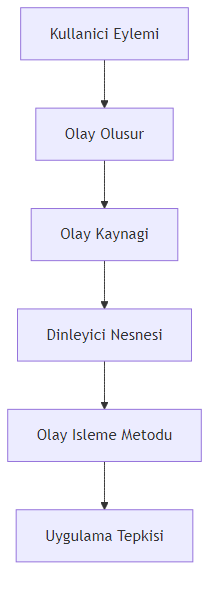
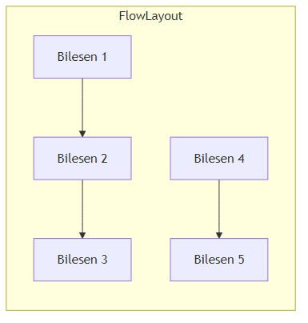
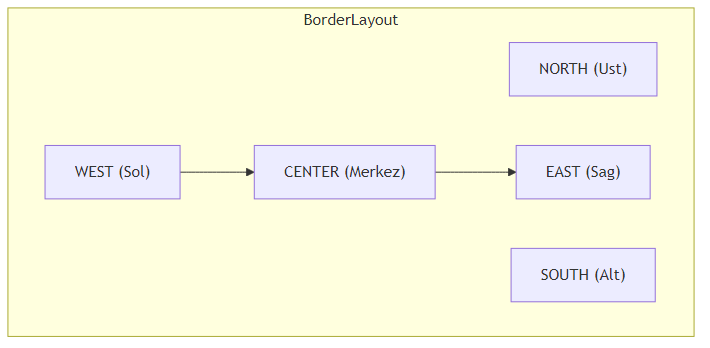
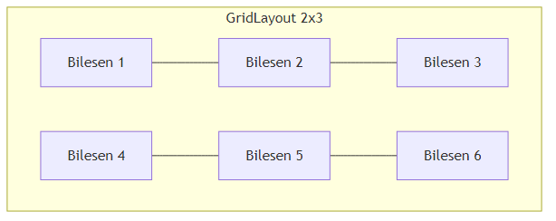

Java’nin Temelleri
2026
---
title: "GUI Programlamaya Giris ve Swing Arayuz Tasarimi"
subtitle: "Java ile Masaustu Uygulama Gelistirme"
author: "Teknik Kitap Yazarı"
date: 2025-01-27
lang: tr
abstract: |
Bu bolumde, Java dilinde grafiksel kullanici arayuzu (GUI) gelistirmenin temellerini ogreneceksiniz.
Swing kutuphanesi ile JFrame, JPanel, layout yoneticileri ve olay isleme mekanizmalarini kullanarak
basit bir GUI uygulamasi gelistireceksiniz. Bolum sonunda, kendi masaustu uygulamalarinizi
tasarlayabilecek ve kodlayabilecek seviyeye geleceksiniz.
---GUI (Graphical User Interface), kullanicilarin bir yazilimla etkilesime gecmesini saglayan gorsel bilesenler butunudur. Dugmeler, metin kutulari, listeler, menuler gibi bilesenler, kullanicilarin komutlari fare tiklamalari veya klavye girisi ile iletmesine olanak tanir. GUI olmayan bir program (komut satiri arayuzu) yalnizca metin tabanli girdi ve cikti kullanirken, GUI ile kullanici deneyimi cok daha sezgisel ve kullanici dostu hale gelir.
Java’da GUI gelistirmek icin uc ana kutuphane bulunur:
AWT (Abstract Window Toolkit): Java’nin ilk GUI kutuphanesidir. Platforma bagimli bilesenler icerir ve hafiftir, ancak sinirli bilesen seti ve platforma ozgu davranislari nedeniyle modern uygulamalar icin yeterli degildir.
Swing: AWT uzerine insa edilmis, daha zengin ve esnek bir kutuphanedir. Tamamen Java’da yazilmistir, bu nedenle platformdan bagimsizdir. Swing, JButton, JTextField, JTable gibi bilesenlerle karmasik arayuzler olusturmayi saglar.
JavaFX: Swing’in halefi olarak gelistirilmistir. Modern, zengin internet uygulamalari (RIA) icin tasarlanmistir. CSS benzeri stil dosyalari ve FXML ile deklaratif arayuz tanimlama destegi sunar. Ancak, Swing hala genis bir kullanim alanina sahiptir ve bircok kurumsal uygulamada tercih edilmektedir.
Bu bolumde, Swing kutuphanesini kullanarak GUI programlamanin temellerini ogreneceksiniz. Swing, ogrenmesi kolay, dokumantasyonu genis ve bir cok IDE tarafindan desteklenen bir kutuphanedir.
Swing, bilesen tabanli bir mimari kullanir. Her bir GUI bileseni, javax.swing paketindeki bir siniftan turer. Temel sinif hiyerarsisi su sekildedir:
java.awt.Component: Tum GUI bilesenlerinin temel sinifi.java.awt.Container: Bilesenleri icerebilen ozel bir Component. JFrame, JPanel gibi siniflar Container’dan turer.javax.swing.JComponent: Swing bilesenlerinin temel sinifi. JButton, JLabel, JTextField gibi bilesenler JComponent’den turer.Swing, Model-View-Controller (MVC) mimarisini benimser. Her bilesen icin:
Swing’de bu uc bilesen genellikle tek bir sinifta birlestirilir (ornegin JButton), ancak modeli ayri olarak da kullanmak mumkundur.
GUI uygulamalari, olay tabanli (event-driven) bir programlama modeli kullanir. Kullanici bir dugmeye tikladiginda, bir metin kutusuna yazi yazdiginda veya fareyi hareket ettirdiginde, bir “olay” (event) olusturulur. Bu olay, ilgili “dinleyici” (listener) tarafindan yakalanir ve islenir.

## 19.3 JFrame - Uygulama PenceresiJFrame, Swing uygulamalarinin ana penceresini temsil eder. Bir JFrame olusturmak icin:
javax.swing.JFrame sinifindan bir nesne olusturulur.Dosya adi: OrnekJFrame.java
import javax.swing.JFrame;
import javax.swing.SwingUtilities;
public class OrnekJFrame {
public static void main(String[] args) {
// Swing bilesenlerinin guvenli bir sekilde olusturulmasi icin Event Dispatch Thread kullanilir
SwingUtilities.invokeLater(new Runnable() {
@Override
public void run() {
JFrame frame = new JFrame("Ilk Swing Uygulamam");
frame.setDefaultCloseOperation(JFrame.EXIT_ON_CLOSE); // Uygulama kapatildiginda program sonlansin
frame.setSize(400, 300); // Pencere boyutu (genislik, yukseklik)
frame.setLocationRelativeTo(null); // Pencereyi ekranin ortasina konumlandir
frame.setVisible(true); // Pencereyi gorunur yap
}
});
}
}Aciklama:
- SwingUtilities.invokeLater(): Swing bilesenlerinin olusturulmasi ve guncellenmesi, Event Dispatch Thread (EDT) uzerinde yapilmalidir. Bu metod, bir Runnable nesnesini EDT’ye gonderir.
- setDefaultCloseOperation(JFrame.EXIT_ON_CLOSE): Pencere kapatildiginda JVM’in sonlanmasini saglar. Diger secenekler: DO_NOTHING_ON_CLOSE, HIDE_ON_CLOSE, DISPOSE_ON_CLOSE.
- setSize(400, 300): Pencere genisligini 400 piksel, yuksekligini 300 piksel yapar.
- setLocationRelativeTo(null): Pencereyi ekranin ortasina yerlestirir.
- setVisible(true): Pencereyi gorunur hale getirir. Varsayilan olarak JFrame gorunmezdir.
Pedagojik Not: JFrame olustururken
setSizevesetLocationRelativeTometodlarini kullanmak, uygulamanizin farkli ekran cozunurluklerinde duzgun goruntulenmesini saglar. Ayrica,setDefaultCloseOperationile uygulamanin dogru bir sekilde sonlandirilmasini garantileyin.
JPanel, diger bilesenleri gruplamak ve duzenlemek icin kullanilan bir kaptir (container). JFrame’in icerik bolmesine (content pane) dogrudan bilesen eklemek yerine, genellikle bir JPanel eklenir ve bilesenler bu panele eklenir. Bu, daha duzenli ve yonetilebilir bir kod yapisina olanak tanir.
Dosya adi: PanelOrnegi.java
import javax.swing.*;
import java.awt.*;
public class PanelOrnegi {
public static void main(String[] args) {
SwingUtilities.invokeLater(new Runnable() {
@Override
public void run() {
JFrame frame = new JFrame("Panel Ornegi");
frame.setDefaultCloseOperation(JFrame.EXIT_ON_CLOSE);
frame.setSize(500, 400);
frame.setLocationRelativeTo(null);
// JPanel olustur
JPanel panel = new JPanel();
panel.setBackground(Color.LIGHT_GRAY); // Arka plan rengi
panel.setLayout(new FlowLayout()); // Layout yoneticisi
// Bilesenler olustur
JLabel label = new JLabel("Adiniz:");
JTextField textField = new JTextField(20); // 20 karakter genisliginde
JButton button = new JButton("Gonder");
// Bilesenleri panele ekle
panel.add(label);
panel.add(textField);
panel.add(button);
// Paneli JFrame'e ekle
frame.add(panel);
frame.setVisible(true);
}
});
}
}Aciklama:
- JPanel panel = new JPanel();: Yeni bir panel olusturur.
- panel.setBackground(Color.LIGHT_GRAY): Panelin arka plan rengini acik gri yapar.
- panel.setLayout(new FlowLayout()): Panelin layout yoneticisini FlowLayout olarak ayarlar. FlowLayout, bilesenleri soldan saga, ustten alta dogru siralar.
- JLabel, JTextField, JButton: Temel bilesenler olusturulur.
- panel.add(label): Bilesenler panele eklenir.
- frame.add(panel): Panel, JFrame’in icerik bolmesine eklenir.
Pedagojik Not: Bilesenleri dogrudan JFrame’e eklemek yerine JPanel kullanmak, daha esnek bir duzen olusturmanizi saglar. Ilerleyen bolumlerde, farkli layout yoneticilerini bir arada kullanarak karmasik arayuzler tasarlayacaksiniz.
Layout yoneticileri, bilesenlerin bir container icinde nasil konumlandirilacagini ve boyutlandirilacagini belirler. Swing’de bircok layout yoneticisi bulunur. Bu bolumde en yaygin kullanilanlari inceleyecegiz.
Bilesenleri soldan saga, ustten alta dogru siralar. Satir doldugunda bir sonraki satira gecer. Varsayilan olarak bilesenlerin tercih edilen boyutlarini kullanir.

### BorderLayoutContainer’i bes bolgeye ayirir: NORTH, SOUTH, EAST, WEST, CENTER. Her bolgeye yalnizca bir bilesen eklenebilir. CENTER bolgesi, diger bolgelerdeki bilesenlerin boyutlarina gore kalan alani kaplar.

### GridLayoutBilesenleri esit boyutlu bir tablo (satir ve sutun) seklinde duzenler. Satir ve sutun sayisi belirtilir. Bilesenler, satir oncelikli olarak (once satirlar, sonra sutunlar) yerlestirilir.

### GridBagLayout (Temel Seviye)En guclu ve esnek layout yoneticisidir. Bilesenlerin konumunu, boyutunu ve hizalama sekillerini ince ayar yaparak belirlemeyi saglar. Ancak, kullanimi digerlerine gore daha karmasiktir. Bu bolumde temel kullanimini gorecegiz.
Dosya adi: LayoutKarsilastirma.java
import javax.swing.*;
import java.awt.*;
public class LayoutKarsilastirma {
public static void main(String[] args) {
SwingUtilities.invokeLater(new Runnable() {
@Override
public void run() {
JFrame frame = new JFrame("Layout Karsilastirma");
frame.setDefaultCloseOperation(JFrame.EXIT_ON_CLOSE);
frame.setSize(600, 400);
frame.setLocationRelativeTo(null);
// Ana panel: BorderLayout
JPanel mainPanel = new JPanel(new BorderLayout());
// FlowLayout ornegi
JPanel flowPanel = new JPanel(new FlowLayout());
flowPanel.setBorder(BorderFactory.createTitledBorder("FlowLayout"));
flowPanel.add(new JButton("1"));
flowPanel.add(new JButton("2"));
flowPanel.add(new JButton("3"));
// GridLayout ornegi (2 satir, 3 sutun)
JPanel gridPanel = new JPanel(new GridLayout(2, 3));
gridPanel.setBorder(BorderFactory.createTitledBorder("GridLayout 2x3"));
for (int i = 1; i <= 6; i++) {
gridPanel.add(new JButton("Dugme " + i));
}
// BorderLayout ornegi (zaten ana panel BorderLayout)
JPanel borderPanel = new JPanel(new BorderLayout());
borderPanel.setBorder(BorderFactory.createTitledBorder("BorderLayout"));
borderPanel.add(new JButton("NORTH"), BorderLayout.NORTH);
borderPanel.add(new JButton("SOUTH"), BorderLayout.SOUTH);
borderPanel.add(new JButton("EAST"), BorderLayout.EAST);
borderPanel.add(new JButton("WEST"), BorderLayout.WEST);
borderPanel.add(new JButton("CENTER"), BorderLayout.CENTER);
// Ana panele ekle
mainPanel.add(flowPanel, BorderLayout.NORTH);
mainPanel.add(gridPanel, BorderLayout.CENTER);
mainPanel.add(borderPanel, BorderLayout.SOUTH);
frame.add(mainPanel);
frame.setVisible(true);
}
});
}
}Aciklama:
- BorderFactory.createTitledBorder("..."): Panelin etrafina baslikli bir kenarlik ekler. Bu, goruntu acisindan hangi layout’un kullanildigini ayirt etmeyi kolaylastirir.
- Her bir layout ornegi, kendi JPanel’i icinde olusturulmus ve ana panele eklenmistir.
Pedagojik Not: Layout yoneticisi secimi, uygulamanizin goruntusu ve kullanici deneyimi uzerinde buyuk etkiye sahiptir. Basit arayuzler icin FlowLayout veya GridLayout yeterli olabilirken, karmasik arayuzler icin BorderLayout ve GridBagLayout kombinasyonu kullanilir. Ilerleyen bolumlerde, uygulama ihtiyaclarina gore dogru layout’u secme stratejilerini ogreneceksiniz.
Olay isleme, GUI programlamanin en onemli kavramlarindan biridir. Kullanici etkilesimlerine (ornegin, dugmeye tiklamak, metin yazmak) yanit vermek icin olay dinleyicileri kullanilir.
Bir dugmeye tiklandiginda, bir ActionEvent olayi olusur. Bu olayi yakalamak icin ActionListener arayuzunu uygulayan bir sinif olusturulur ve dugmeye kaydedilir.
Dosya adi: ActionListenerOrnegi.java
import javax.swing.*;
import java.awt.*;
import java.awt.event.ActionEvent;
import java.awt.event.ActionListener;
public class ActionListenerOrnegi {
public static void main(String[] args) {
SwingUtilities.invokeLater(new Runnable() {
@Override
public void run() {
JFrame frame = new JFrame("ActionListener Ornegi");
frame.setDefaultCloseOperation(JFrame.EXIT_ON_CLOSE);
frame.setSize(400, 200);
frame.setLocationRelativeTo(null);
JPanel panel = new JPanel(new FlowLayout());
JLabel label = new JLabel("Henuz tiklanmadi.");
JButton button = new JButton("Tikla");
// Anonymous inner class ile ActionListener
button.addActionListener(new ActionListener() {
@Override
public void actionPerformed(ActionEvent e) {
label.setText("Dugmeye tiklandi!");
}
});
panel.add(button);
panel.add(label);
frame.add(panel);
frame.setVisible(true);
}
});
}
}Java 8 ile gelen lambda ifadeleri, olay isleme kodunu daha kisa ve okunabilir hale getirir.
Dosya adi: LambdaOrnegi.java
import javax.swing.*;
import java.awt.*;
public class LambdaOrnegi {
public static void main(String[] args) {
SwingUtilities.invokeLater(() -> {
JFrame frame = new JFrame("Lambda Ornegi");
frame.setDefaultCloseOperation(JFrame.EXIT_ON_CLOSE);
frame.setSize(400, 200);
frame.setLocationRelativeTo(null);
JPanel panel = new JPanel(new FlowLayout());
JLabel label = new JLabel("Henuz tiklanmadi.");
JButton button = new JButton("Tikla");
// Lambda ifadesi
button.addActionListener(e -> label.setText("Lambda ile tiklandi!"));
panel.add(button);
panel.add(label);
frame.add(panel);
frame.setVisible(true);
});
}
}Aciklama:
- Lambda ifadesi e -> label.setText("Lambda ile tiklandi!"), actionPerformed metodunun govdesini temsil eder. e parametresi, ActionEvent nesnesidir.
- Bu yontem, kodun daha az ve daha anlasilir olmasini saglar.
Bazen ayni dinleyiciyi birden fazla bilesene kaydetmek isteyebilirsiniz. Bunun icin, ActionEvent nesnesinin getSource() metodu kullanilarak hangi bilesenin olayi olusturdugu tespit edilebilir.
Dosya adi: CokluDugmeOrnegi.java
import javax.swing.*;
import java.awt.*;
import java.awt.event.ActionEvent;
import java.awt.event.ActionListener;
public class CokluDugmeOrnegi {
public static void main(String[] args) {
SwingUtilities.invokeLater(() -> {
JFrame frame = new JFrame("Coklu Dugme Ornegi");
frame.setDefaultCloseOperation(JFrame.EXIT_ON_CLOSE);
frame.setSize(400, 200);
frame.setLocationRelativeTo(null);
JPanel panel = new JPanel(new FlowLayout());
JLabel label = new JLabel("Hicbir dugmeye tiklanmadi.");
JButton button1 = new JButton("Bir");
JButton button2 = new JButton("Iki");
JButton button3 = new JButton("Uc");
// Ortak ActionListener
ActionListener commonListener = new ActionListener() {
@Override
public void actionPerformed(ActionEvent e) {
JButton source = (JButton) e.getSource();
label.setText(source.getText() + " dugmesine tiklandi!");
}
};
// Tum dugmelere ayni dinleyiciyi ekle
button1.addActionListener(commonListener);
button2.addActionListener(commonListener);
button3.addActionListener(commonListener);
panel.add(button1);
panel.add(button2);
panel.add(button3);
panel.add(label);
frame.add(panel);
frame.setVisible(true);
});
}
}Pedagojik Not: Lambda ifadeleri, ozellikle basit olay isleme durumlarinda kodu daha temiz hale getirir. Ancak, karmasik islemler icin ayri bir sinif veya anonymous inner class kullanmak daha uygun olabilir.
getSource()metodu, ayni dinleyicinin birden fazla bilesen icin kullanilmasi gerektiginde cok kullanislidir.
Simdiye kadar ogrendiklerimizi kullanarak basit bir hesap makinesi uygulamasi gelistirelim. Bu uygulama, iki sayi girisi, toplama, cikarma, carpma ve bolme islemlerini gerceklestirecektir.
Uygulama su bilesenlerden olusacaktir:
- Iki adet JTextField (sayi girisi icin)
- Bir adet JComboBox (islem secimi icin: +, -, *, /)
- Bir adet JButton (hesapla)
- Bir adet JLabel (sonuc gostermek icin)
Layout olarak GridBagLayout kullanarak bilesenleri duzenleyecegiz.
Dosya adi: HesapMakinesi.java
import javax.swing.*;
import java.awt.*;
import java.awt.event.ActionEvent;
import java.awt.event.ActionListener;
public class HesapMakinesi {
public static void main(String[] args) {
SwingUtilities.invokeLater(() -> {
JFrame frame = new JFrame("Basit Hesap Makinesi");
frame.setDefaultCloseOperation(JFrame.EXIT_ON_CLOSE);
frame.setSize(400, 200);
frame.setLocationRelativeTo(null);
// GridBagLayout ile duzen
JPanel panel = new JPanel(new GridBagLayout());
GridBagConstraints gbc = new GridBagConstraints();
gbc.insets = new Insets(5, 5, 5, 5); // Kenar bosluklari
// Bilesenler
JLabel label1 = new JLabel("Sayi 1:");
JTextField textField1 = new JTextField(10);
JLabel label2 = new JLabel("Sayi 2:");
JTextField textField2 = new JTextField(10);
JLabel labelIslem = new JLabel("Islem:");
String[] islemler = {"+", "-", "*", "/"};
JComboBox<String> comboBox = new JComboBox<>(islemler);
JButton hesaplaButton = new JButton("Hesapla");
JLabel sonucLabel = new JLabel("Sonuc: ");
// Bilesenleri panele ekle
// Satir 0: Sayi 1
gbc.gridx = 0; gbc.gridy = 0;
panel.add(label1, gbc);
gbc.gridx = 1;
panel.add(textField1, gbc);
// Satir 1: Sayi 2
gbc.gridx = 0; gbc.gridy = 1;
panel.add(label2, gbc);
gbc.gridx = 1;
panel.add(textField2, gbc);
// Satir 2: Islem
gbc.gridx = 0; gbc.gridy = 2;
panel.add(labelIslem, gbc);
gbc.gridx = 1;
panel.add(comboBox, gbc);
// Satir 3: Hesapla butonu
gbc.gridx = 0; gbc.gridy = 3;
gbc.gridwidth = 2; // Iki sutunu kapla
gbc.fill = GridBagConstraints.HORIZONTAL;
panel.add(hesaplaButton, gbc);
// Satir 4: Sonuc
gbc.gridx = 0; gbc.gridy = 4;
gbc.gridwidth = 2;
panel.add(sonucLabel, gbc);
// Olay isleme
hesaplaButton.addActionListener(new ActionListener() {
@Override
public void actionPerformed(ActionEvent e) {
try {
double sayi1 = Double.parseDouble(textField1.getText());
double sayi2 = Double.parseDouble(textField2.getText());
String islem = (String) comboBox.getSelectedItem();
double sonuc = 0;
switch (islem) {
case "+": sonuc = sayi1 + sayi2; break;
case "-": sonuc = sayi1 - sayi2; break;
case "*": sonuc = sayi1 * sayi2; break;
case "/":
if (sayi2 == 0) {
JOptionPane.showMessageDialog(frame, "Bir sayi sifira bolunemez!", "Hata", JOptionPane.ERROR_MESSAGE);
return;
}
sonuc = sayi1 / sayi2;
break;
}
sonucLabel.setText("Sonuc: " + sonuc);
} catch (NumberFormatException ex) {
JOptionPane.showMessageDialog(frame, "Gecerli bir sayi giriniz!", "Hata", JOptionPane.ERROR_MESSAGE);
}
}
});
frame.add(panel);
frame.setVisible(true);
});
}
}Aciklama:
- GridBagConstraints ile her bilesenin konumu (gridx, gridy), kapsadigi sutun sayisi (gridwidth) ve dolgu (fill) ayarlanir.
- insets ile bilesenler arasindaki bosluk ayarlanir.
- JOptionPane.showMessageDialog() ile hata mesaji gosterilir.
- try-catch blogu ile gecersiz sayi girisi kontrol edilir.
Uygulamayi calistirdiginizda, karsiniza asagidaki gibi bir pencere cikacaktir:
Sayi 1: [10]
Sayi 2: [5]
Islem: [*]
[ Hesapla ]
Sonuc: 50.0Test senaryolari: 1. Gecerli sayilar ve islem secimi ile dogru sonuc alinmali. 2. Sifira bolme durumunda hata mesaji gosterilmeli. 3. Gecersiz giris (ornegin harf) durumunda hata mesaji gosterilmeli.
Pedagojik Not: Bu ornek, temel GUI bilesenlerinin, layout yoneticisinin ve olay isleme mekanizmasinin birlikte nasil kullanilacagini gostermektedir. Uygulamayi daha da gelistirebilirsiniz: ornegin, klavye kisa yollari ekleyebilir, daha fazla islem (us alma, karekok) ekleyebilir veya gecmis islemleri gosterebilirsiniz.
Bu bolumde, Swing ile ilgili daha ileri seviye konulara kisaca deginecegiz. Bu konular, daha profesyonel ve karmasik uygulamalar gelistirmek icin onemlidir.
JOptionPane sinifi, basit diyalog kutulari olusturmak icin kullanilir. Ornegin, bilgi mesaji, uyari, hata, onay veya giris diyaloglari.
// Bilgi mesaji
JOptionPane.showMessageDialog(frame, "Islem basarili!", "Bilgi", JOptionPane.INFORMATION_MESSAGE);
// Onay diyalogu
int secim = JOptionPane.showConfirmDialog(frame, "Emin misiniz?", "Onay", JOptionPane.YES_NO_OPTION);
if (secim == JOptionPane.YES_OPTION) {
// Islem yap
}
// Giris diyalogu
String girilenDeger = JOptionPane.showInputDialog(frame, "Adinizi giriniz:");IDE’ler, Swing uygulamalari icin gorsel tasarim araclari sunar. Ornegin, Eclipse’de WindowBuilder eklentisi veya NetBeans’de GUI Builder. Bu araclar, surukle-birak yontemiyle arayuz tasarlamanizi ve otomatik kod olusturmanizi saglar. Ancak, otomatik olusturulan kodun okunabilirligi ve bakimi zor olabilir. Bu nedenle, temel kavramlari ogrendikten sonra bu araclari kullanmaniz daha faydali olacaktir.
Bu bolumde, Java Swing kutuphanesi ile GUI programlamanin temellerini ogrendiniz. JFrame, JPanel, layout yoneticileri ve olay isleme mekanizmalarini kullanarak basit bir hesap makinesi uygulamasi gelistirdiniz.
| Terim | Aciklama |
|---|---|
| Component | Gorsel bir GUI bileseni (ornegin, dugme, etiket) |
| Container | Bilesenleri icerebilen ozel bir component (ornegin, JPanel) |
| Layout | Bilesenlerin duzenlenme sekli |
| Event | Kullanici eylemi sonucu olusan sinyal |
| Listener | Bir olayi dinleyen ve isleyen arayuz |
| Anonymous Inner Class | Isimsiz, tek kullanimlik ic sinif |
| Lambda Expression | Java 8 ile gelen, fonksiyonel programlama destegi |
setDefaultCloseOperation() metodu hangi degerleri alabilir? Her birinin anlami nedir?Kisisel Bilgi Formu Uygulamasi: Ad, soyad, yas, e-posta gibi bilgileri girmek icin bir GUI uygulamasi gelistirin. Formda JLabel, JTextField, JButton ve JTextArea kullanin. Bilgileri bir JTextArea’da gosterin.
Renk Secici Uygulamasi: Uc adet JSlider (kirmizi, yesil, mavi) kullanarak bir renk karistirici uygulamasi gelistirin. Slider degerlerine gore bir JPanel’in arka plan rengini degistirin.
Basit Alisveris Listesi: Kullanicinin urun adi ve fiyatini girebilecegi, ekleme ve silme islemleri yapabilecegi bir alisveris listesi uygulamasi gelistirin. Toplam fiyati gosteren bir JLabel ekleyin.
Hesap Makinesini Gelistirin: Hesap makinesine klavye kisa yollari (Enter tusu ile hesaplama, Esc tusu ile temizleme) ve us alma islemi ekleyin.
Menu ve Toolbar ile Zenginlestirilmis Uygulama: Hesap makinesine Dosya menusu (Cikis), Duzen menusu (Temizle) ve Yardim menusu (Hakkimizda) ekleyin. Ayrica, bir toolbar ekleyerek sik kullanilan islemleri (toplama, cikarma) hizli erisime acin.